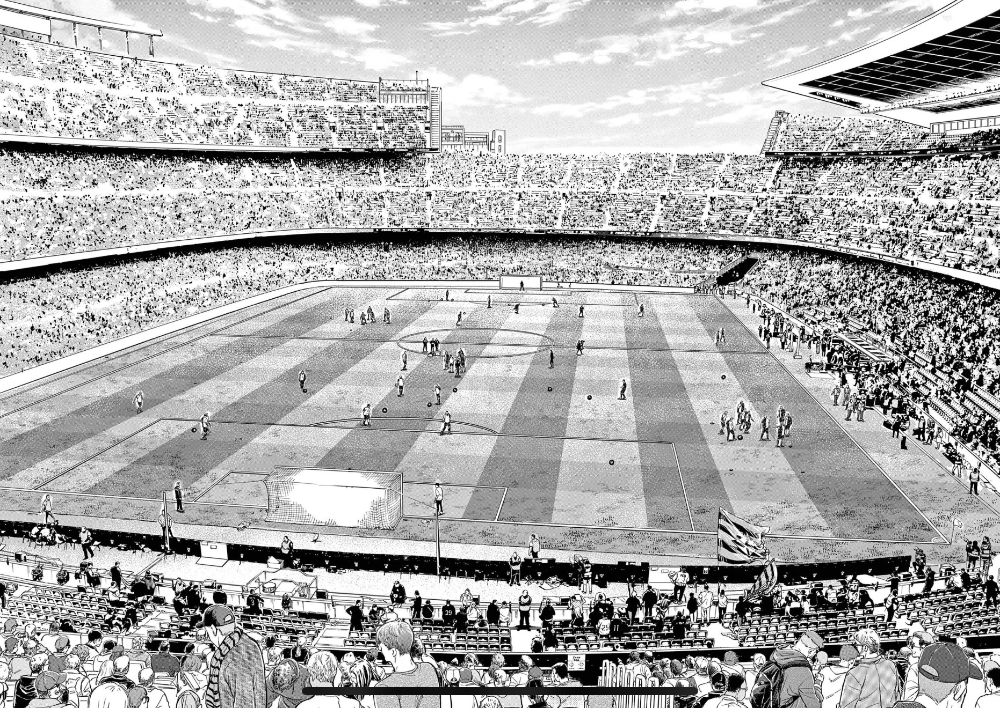
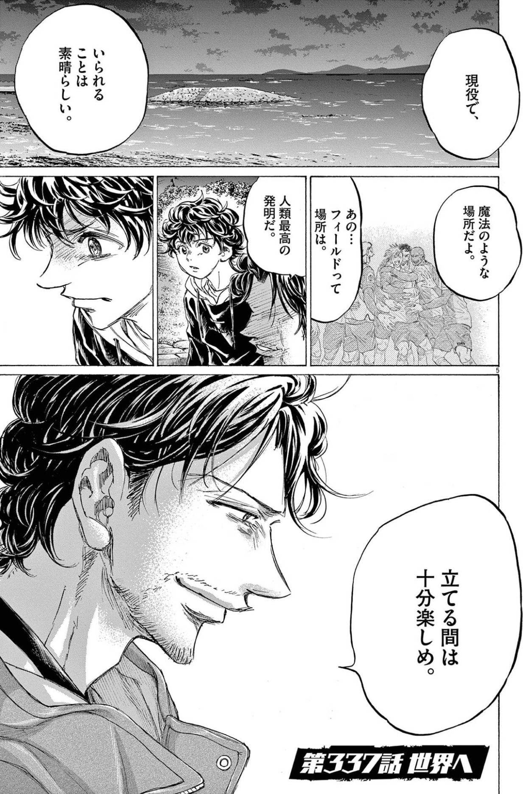
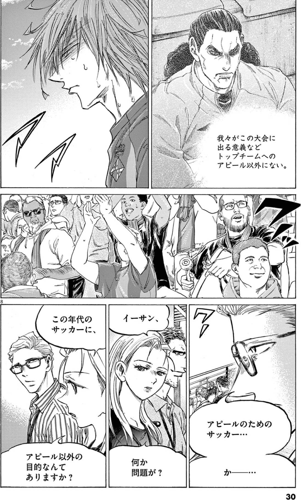
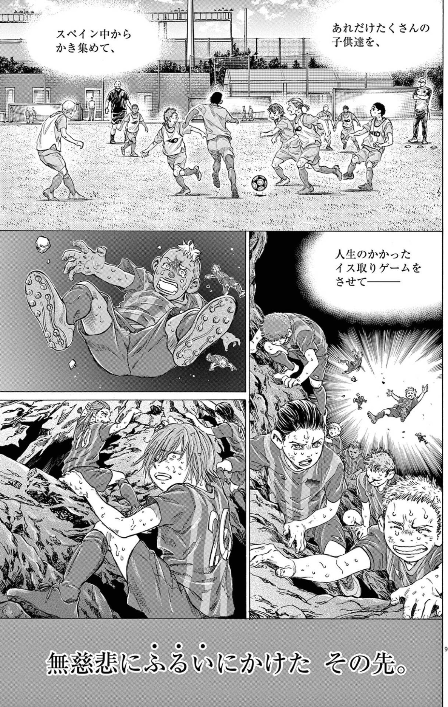
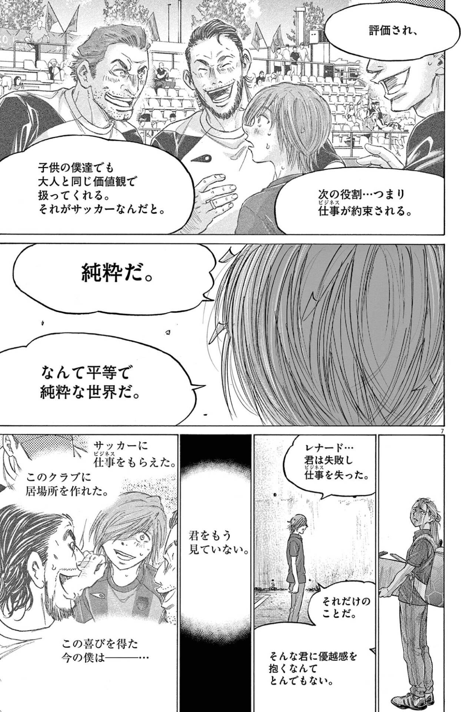

読書ログ #8 —— アオアシ × Finite and Infinite Games × 想像の共同体
勝つことが目的になったとき、無限ゲームだった文化は、有限ゲームに飲まれる。
1. 王国の、矜持と伝統
スペインの名門クラブは、ひとつの王国だ。

数万人を飲みこむスタジアム。エンブレム。歴史。語り継がれる伝説。誰もが憧れ、選ばれることを夢見る。そこには、確かに矜持と伝統がある。
でも——その矜持は、いったい何でできているのだろう。そして、それはどこで、本質を見失うのか。今回は、すでに登場した二冊に、もう一度戻る。ベネディクト・アンダーソン『想像の共同体』(#2) と、ジェームス・カース『Finite and Infinite Games』(#3) だ。
2. 想像の共同体：王国は、物語でできている
#2 で視たアンダーソンの『想像の共同体』は、国家を「共有された物語で成立する共同体」として捉えた。顔も知らない者同士が、同じ物語を信じることで、ひとつの「われわれ」になる。
名門クラブも、まったく同じだ。エンブレム、クラブカラー、創設の神話、伝説の選手、サポーターが語り継ぐ記憶。それらが、「この王国の一員だ」という想像の共同体を作る。矜持の源は、血でも土でもなく、共有された物語だ。
物語が強いほど、引力も強い。世界中の才能が、その物語に憧れて集まってくる。ここまでは、美しい。問題は、その強い物語が、何のために回りはじめるか、だ。
3. Finite and Infinite Games：勝つゲームと、続けるゲーム
#3 で視たカースは、人間の営みを二種類に分けた。勝つための有限ゲームと、続けるための無限ゲーム。
クラブの文化は、本来、無限ゲームだ。勝っても負けても、明日もまたボールを蹴る。世代が入れ替わっても、続いていく遊び場。

「魔法のような場所だよ。立てる間は十分楽しめ」。ここには、勝敗の外側にある何かがある。#3 で視たホモ・ルーデンスの魔法円環——本気で遊べる別世界——だ。王国の本質は、たぶん最初、ここにあった。勝つためではなく、続けるための、魔法の場所。
4. アピールのためのサッカー
けれど、王国は、いつのまにか傾きはじめる。

「アピール以外の目的なんてありますか?」。サッカーが、トップチームへの売り込みの手段になる。選ばれるための、契約を勝ち取るための、プレー。遊びだったものが、審査になる。
これが、有限ゲーム化の入口だ。続けるための場が、勝ち抜くための場へと、静かにすり替わる。プレーの目的が「楽しむ・続ける」から「選ばれる・勝つ」へ移った瞬間、魔法円環の魔法は、少しずつ薄れていく。
5. 無慈悲なふるい
有限ゲームに染まった王国は、こういう形をとる。

スペイン中から子供をかき集め、人生を賭けたイス取りゲームをさせて、無慈悲にふるいにかける。残るのはひと握り。残りは、振り落とされる。
勝つための効率が、育てるという本質を飲みこんでいく。#6 で視た「育てる熱」も、#7 で視た「育つ環境」も、ここでは選別の道具に変わる。王国が、勝利を生産するマシンになる。物語は、まだ美しいまま。けれど中身は、もう続けるための遊び場ではない。
6. 悪意がないことが、一番怖い
そして、ここがいちばん怖いところだ。王国を有限ゲームに変えていくのは、悪人ではない。
みんな、良かれと思っている。勝たせたい。育てたい。クラブのためを思っている。誰も、本質を壊そうとはしていない。それでも、一人ひとりの善意が積み重なった先で、続けるための場が、勝ち抜くための機械にすり替わっている。
悪意があれば、まだ戦える。誰かを悪役として名指し、止められるからだ。けれど、悪意のない堕落には、敵がいない。だからこそ、止めるのが難しい。これは、#1 のベルセルク化、#2 のカルト化と、まったく同じ構造だ。強い物語と熱が、いつのまにか人を「資源」や「駒」に変えていく。なのに、そこに、悪役はいない。
7. それでも、純粋で平等な世界
ただ、有限ゲームに飲みこまれた王国の、その同じピッチの上に、まだ救いが残っている。

「純粋だ。なんて平等で純粋な世界だ」。ここには、遊びの余白はないかもしれない。あるのは、過酷な競争だ。けれど、その競争は——少なくともピッチの上では——どこまでも平等だ。子供でも、大人と同じ価値観で評価される。出自も、肩書きも、コネも関係ない。ボールの前では、誰もが平等に裁かれる。
これは、#3 で視た遊び（無限ゲーム）の核とは、少し別のものだ。むしろ、過酷な有限ゲームの、いちばん美しい部分——勝負が、純粋に実力だけで決まるという、厳しい平等だ。
だとすると、王国が本当に堕ちるのは、勝利を目的化したときよりも、もっと先にあるのかもしれない。この純粋な平等すら失って、コネや政治や忖度が、ピッチの外で勝敗を決めはじめたときだ。矜持とは、たぶん、勝ち続けることではない。「ボールの前では、誰もが平等」——その一点を、最後まで手放さないことだ。
そして、もうひとつ。勝ち続けることだけを目的にした王国は、たとえその競争が平等でも、いつか、別の文明に淘汰されるかもしれない。遊びを残し、新しい試みを続けられる文明に。進化の余地は、いつも遊びの中に開かれている。型を完成させて守る者よりも、まだ型を崩して遊べる者が、次の時代をひらく。だとすれば、純粋な平等を手放さないことと、遊びを手放さないことは、最後には、同じひとつのことなのかもしれない。
8. 観測と、王国
最後に、OrbitLens に繋げたい。
組織もまた、ひとつの想像の共同体だ(#2)。ミッション、バリュー、創業の物語——共有された物語が、「われわれ」を作る。それ自体は、強さの源だ。
危ういのは、観測が「勝つための序列装置」になったときだ(#3)。スコアで人を選別し、ふるいにかけ、勝てる者だけを残す。そうやって、続けるための共同体が、勝ち抜くための競争場にすり替わる。しかも——悪意なく。誰もが良かれと思って、KPIを回している。#1 のベルセルク、#2 の共有幻想、#3 の有限ゲーム。結局、おなじ条件に戻ってくる。
EIS が順位表になることを、僕がいちばん恐れるのは、ここだ。観測は、序列の道具にも、本質を守る装置にもなれる。順位を確定するためではなく、その遊び場がまだ続いているか、純粋で平等な核が保たれているかを観るために——そして、悪意なく堕ちていく構造を、誰かが悪役になる前に照らすために、観測はある。
王国は、物語でできている。その物語が「勝つための装置」になった瞬間、王国は本質を見失う。
矜持とは、勝ち続けることではなく、本質を手放さないことなのかもしれない。
取り上げた本
次回予告
次回 #9 で、アオアシ・アークは最終回。テーマは「矜持と、言葉にしない凄み」。FWの矜持、決めきる信念、時間の蓄積からくる凄み、そして——なぜ達人は、あえて言語化をしないのか。マイケル・ポランニー『暗黙知の次元』と、ダニエル・カーネマン『ファスト&スロー』と並べて読む。
本記事は小林有吾『アオアシ』、ジェームス・カース『Finite and Infinite Games』、およびベネディクト・アンダーソン『想像の共同体』への個人的な考察です。
OrbitLens / machuz